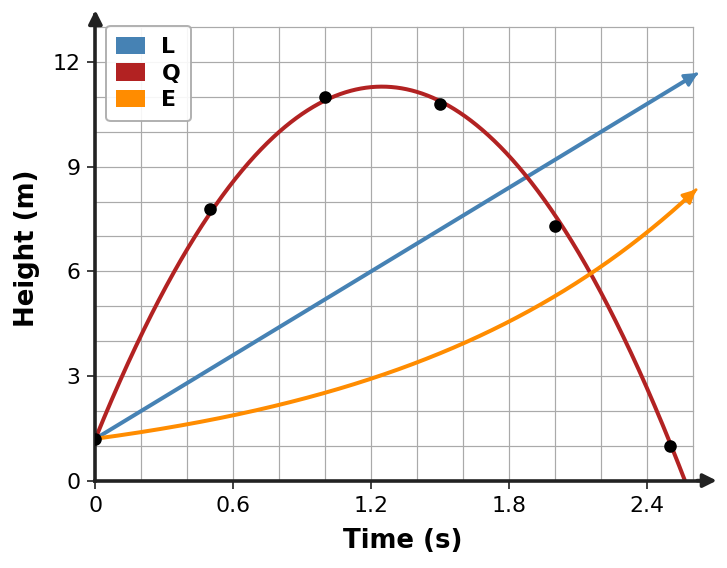

Modeling Investigation
| Time (s) | Height (m) |
|---|---|
| 0.0 | 1.2 |
| 0.5 | 7.8 |
| 1.0 | 11.0 |
| 1.5 | 10.8 |
| 2.0 | 7.3 |
| 2.5 | 1.0 |

Analyze time-height measurements from a tossed ball video and describe the shape/change pattern.
Compare linear, quadratic, and exponential candidate models using both data and behavior.
Estimate a quadratic model or use a provided candidate set and justify the best fit.
Use the model to estimate maximum height and landing time, then compare with observed data.
State assumptions, meaningful domain, and one reason predictions should not be treated as exact.
What makes a model defensible besides having a small numerical error on a few points?